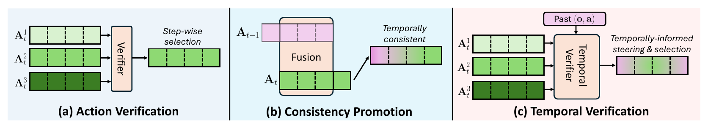
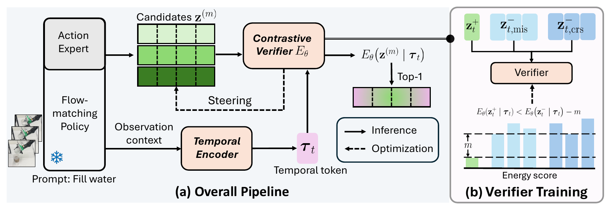

An efficient, temporally-aware verification framework for flow-matching VLAs.
Generative policies have emerged as a promising paradigm for robot learning, combining expressive generative action modeling with scalable imitation learning from large demonstration corpora. Yet when trained on heterogeneous demonstrations, their chunked generation process can produce suboptimal actions, causing errors to compound during execution and eventually driving the robot into out-of-distribution failure states. Action verification has recently emerged as a test-time scaling approach to mitigate this issue — sampling multiple action candidates and using an external verifier to select the best one. However, existing approaches remain temporally myopic: they evaluate candidates using only static-timestep observations, and often rely on large-scale verifiers and additional expert demonstrations.
We introduce Temporal Verification (TeV), an efficient temporally aware action verification framework for flow-matching VLAs. TeV first learns a temporal token that summarizes recent observation–action history, allowing candidate chunks to be evaluated as continuations of the robot's execution trajectory rather than isolated predictions. Conditioned on this token, TeV constructs positive–negative sample pairs without additional expert data or preference annotations, and trains an energy-based verifier with a contrastive objective to favor higher-quality chunks that are temporally compatible with recent execution.
Beyond post-hoc ranking, TeV uses the learned energy score to steer intermediate samples toward lower-energy regions during flow integration. The verifier adds less than 0.15% parameters on top of the frozen base policy and requires no additional expert demonstrations. Extensive experiments in simulation and real-world settings show that TeV provides reliable action candidate ranking, yields consistent task-success gains of 6%–18%, and produces smoother execution trajectories.
Paradigm comparison. (a) Conventional action verification selects among multiple sampled candidates at each decision step, relying only on the current observation. (b) Temporal-consistency methods refine the current prediction using previous action chunks to promote cross-chunk coherence. (c) Temporal Verification integrates both: conditioned on past observation–action context, the learned temporal verifier steers and selects candidates that are consistent with recent execution.

A lightweight add-on for flow-matching VLAs — no policy fine-tuning, no extra demonstrations.
A lightweight temporal encoder compresses the recent observation–action history into a single compact token, trained with a dynamics-aware future-action prediction objective. It gives the verifier execution context beyond the current observation.
Conditioned on the temporal token, an energy model ranks candidate chunks. Training needs no extra expert data: temporally mismatched expert chunks and coarse-integration policy samples serve as free, informative negatives.
The differentiable energy score guides intermediate samples toward lower-energy regions during flow integration, then selects the lowest-energy completed chunk for execution — adding less than 0.15% parameters to the base policy.
Overview of Temporal Verification. (a) Overall pipeline: observation–action history is encoded into a temporal token that conditions the energy-based contrastive verifier. At each flow-matching integration step, candidate representations are scored by the verifier; the resulting energies steer intermediate samples during integration and rank completed chunks after integration. (b) Verifier training: expert chunks serve as positives, while temporally mismatched chunks and policy-generated deviations serve as negatives. The verifier learns to assign positives lower energy than negatives by at least a specified margin.

All methods share the same frozen π0.5 backbone and the same candidate budget (M = 4).
| Method | Camera | Robot | Language | Light | Background | Noise | Layout | Average |
|---|---|---|---|---|---|---|---|---|
| Base (π0.5) | 41.8 | 72.3 | 79.9 | 82.8 | 84.4 | 76.2 | 84.9 | 73.2 |
| Random | 43.9 | 70.2 | 86.7 | 81.8 | 85.5 | 79.3 | 81.1 | 74.3 |
| TE | 44.4 | 72.3 | 82.2 | 76.3 | 85.1 | 74.8 | 84.0 | 73.0 |
| BID | 44.2 | 73.3 | 76.2 | 81.4 | 80.3 | 76.6 | 81.7 | 72.2 |
| TACO | 44.9 | 77.1 | 90.1 | 77.4 | 86.2 | 77.1 | 87.2 | 76.0 |
| TACO* | 42.7 | 74.8 | 83.8 | 76.6 | 76.8 | 72.2 | 80.1 | 71.5 |
| TeV (Ours) | 48.4 | 75.6 | 91.9 | 84.7 | 95.8 | 80.0 | 92.6 | 79.8 |
| Method | Adjust Bottle | Pick Bottles | Place Container | Stack Bowls | Place Cup | Open Laptop | Press Stapler | Average |
|---|---|---|---|---|---|---|---|---|
| Base (π0.5) | 86.0 | 48.0 | 86.0 | 89.0 | 78.0 | 75.0 | 44.0 | 72.3 |
| Random | 85.0 | 52.0 | 90.0 | 88.0 | 79.0 | 72.0 | 50.0 | 73.7 |
| TE | 87.0 | 43.0 | 86.0 | 88.0 | 82.0 | 74.0 | 47.0 | 72.4 |
| BID | 87.0 | 59.0 | 87.0 | 91.0 | 76.0 | 77.0 | 47.0 | 74.9 |
| TACO | 81.0 | 46.0 | 87.0 | 85.0 | 80.0 | 62.0 | 49.0 | 70.0 |
| TACO* | 85.0 | 32.0 | 85.0 | 87.0 | 80.0 | 67.0 | 52.0 | 69.7 |
| TeV (Ours) | 95.0 | 64.0 | 94.0 | 93.0 | 88.0 | 81.0 | 54.0 | 81.3 |
| Method | Bottle to Bag | Cup Transport | Water Filling |
|---|---|---|---|
| Base (π0.5) | 60.7±31.9 | 79.8±27.5 | 40.5±32.4 |
| BID | 59.8±27.8 | 71.5±25.9 | 51.3±30.5 |
| TACO | 64.0±30.5 | 75.2±21.2 | 51.5±29.7 |
| TeV (Ours) | 69.3±26.7 | 88.3±15.9 | 68.0±12.8 |
Real-world tasks require stable execution and smooth movement: the bottle is deformable, and two tasks involve transporting or pouring liquid. Baselines often exhibit abrupt motions and oscillations — leading to dropped bottles or spilled water — whereas TeV maintains a steadier trajectory and completes the task reliably.